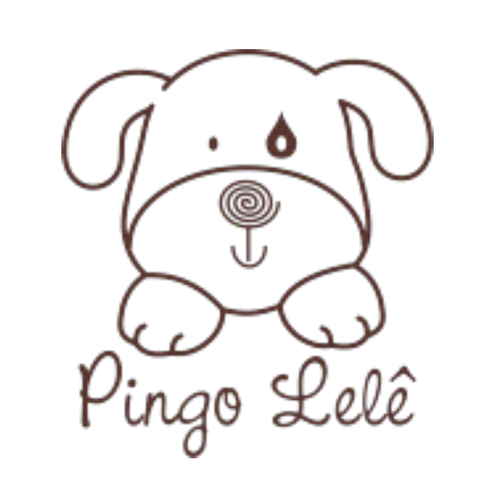
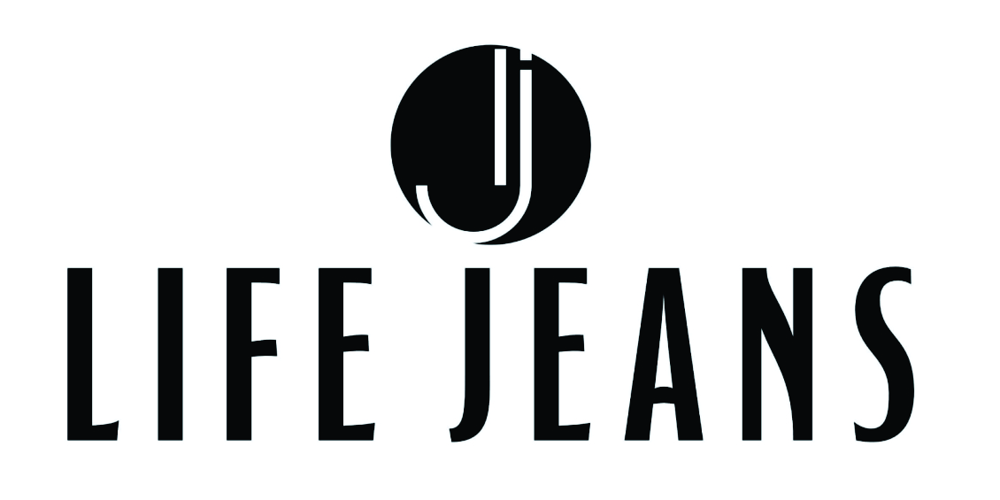

Sobre nós
A LORES é uma empresa de representação e gestão de marcas de moda infantil que atua junto a lojistas do Sul de Minas Gerais, levando marcas consolidadas e um atendimento próximo, consultivo e humano.
Nossa Missão
Conectar lojistas às melhores oportunidades do mercado infantil, oferecendo marcas fortes, produtos de alta aceitação e um atendimento próximo, consultivo e humano.
Nossa Visão
Ser referência em gestão de marcas infantis no Sul de Minas, contribuindo para o crescimento sustentável dos nossos clientes através de um portfólio inteligente e de um relacionamento de longo prazo.
Nossos Valores
- Transparência nas relações comerciais
- Compromisso com resultados
- Respeito aos clientes e parceiros
- Atendimento próximo e personalizado
- Busca constante por inovação
- Crescimento sustentável para todas as partes envolvidas
Quem atende você
Rodrigo Costa
Responsável pela LORES | Gestão de Marcas. Atendimento direto ao lojista, da apresentação das coleções ao acompanhamento pós-venda.
Pouso Alegre - MG
Marcas que representamos

Pingo Lelê
Life JeansO diferencial da LORES
Enquanto muitos representantes apenas apresentam coleções, a LORES trabalha para que o cliente tenha sucesso na venda. Oferecemos:
- Curadoria de marcas
- Apoio na formação do mix de produtos
- Análise de oportunidades de mercado
- Acompanhamento pós-venda
- Suporte para ações promocionais
- Materiais para redes sociais
- Ideias para vitrines e exposição de produtos
- Estratégias para aumento de giro de estoque
- Relacionamento direto com as indústrias representadas
Atendimento
Nosso atendimento no WhatsApp conta com um assistente automático que responde dúvidas iniciais a qualquer hora do dia. Sempre que você preferir, o atendimento é transferido para uma pessoa da equipe.
Horário de atendimento humano: segunda a sexta, das 8h às 18h.
Vendas exclusivamente no atacado, para lojistas.
Contato
WhatsApp: +55 35 9145-3217
Instagram: @loresgestaodemarcas
Cidade: Pouso Alegre - MG